橄榄油是通过压榨整个橄榄（地中海盆地传统树种油橄榄的果实）并提取油而获得的植物油。
| 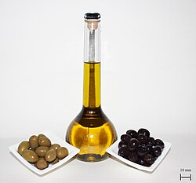
特级初榨橄榄油搭配绿色和黑色腌制食用橄榄
|
|
| 脂肪成分 | |
|---|---|
| 饱和脂肪 | |
| 总饱和脂肪 | 棕榈酸：13.0% 硬脂酸：1.5% |
| 不饱和脂肪 | |
| 总不饱和 | > 85% |
| 单不饱和脂肪酸 | 油酸：70.0% 棕榈油酸：0.3–3.5% |
| 多不饱和 | 亚油酸：15.0% α-亚麻酸：0.5% |
| 特性 | |
| 每100克（3.5盎司）食物能量 | 3,700 千焦（880 千卡） |
| 熔点 | −6.0 摄氏度（21.2 华氏度） |
| 沸点 | 299 摄氏度（570 华氏度） |
| 烟点 | 190–215 °C (374–419 °F)（特级初榨）[ 1 ] 215 °C (419 °F)（初榨）[ 2 ] 210 °C (410 °F)（精炼） |
| 20 °C (68 °F) 时的硬度 | 液体 |
| 20 °C (68 °F) 时的比重 | 0.911 [ 3 ] |
| 20 °C (68 °F) 时的粘度 | 84 厘泊 |
| 折射率 | 1.4677–1.4705（原生和精炼） 1.4680–1.4707（果渣） |
| 碘值 | 75–94（初榨和精制） 75–92（果渣） |
| 酸值 | 最大值：6.6％[不一致]（精制和果渣） 0.8％（特级初榨） |
| 皂化值 | 184–196（初榨和精制） 182–193（果渣） |
| 过氧化值 | 20（初榨） 10（精制和果渣） |
{kind=link}
它通常用于煎炸食物、调味品或沙拉酱。它也存在于一些化妆品、药品、肥皂和传统油灯的燃料中。在某些宗教中，它还有其他用途。橄榄是地中海美食的三大核心食用植物之一，另两种是小麦和葡萄。自公元前8千年以来，地中海沿岸就开始种植橄榄树。
2022年，西班牙是全球最大的橡胶生产国，产量占全球总产量的24%。其他主要橡胶生产国包括意大利、希腊和土耳其，合计占全球市场份额的59%。[ 4 ]
橄榄油的成分因品种、海拔、采收时间和提取工艺而异。它主要由油酸（含量高达83%）组成，并含有少量其他脂肪酸，例如亚油酸（含量高达21%）和棕榈酸（含量高达20%）。特级初榨橄榄油 (EVOO) 的游离酸度不得超过0.8% ，并被认为具有良好的风味特征。
历史
编辑橄榄油长期以来一直是地中海美食的常见配料，包括古希腊和古罗马美食。野生橄榄原产于小亚细亚，早在公元前 8 千年就被新石器时代的人们采集。 [ 5 ] [ 6 ]除食用外，橄榄油还用于宗教仪式、药物、油灯燃料、肥皂制造和皮肤护理。[需要引文]斯巴达人和其他希腊人在体育馆锻炼时用油擦拭自己。从公元前 7 世纪初开始，橄榄油的美容用途迅速传播到所有希腊城邦，与裸体训练的运动员一起传播开来，尽管价格昂贵，但仍然持续了近一千年。[ 7 ] [ 8 ]橄榄油也是流行的避孕方式；亚里士多德在其《动物史》中建议，将橄榄油与雪松油、铅膏或乳香膏混合涂抹于宫颈，可以防止怀孕。[ 9 ]
早期栽培
编辑 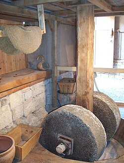
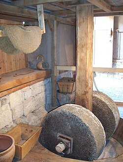
橄榄树驯化的确切日期和地点尚不清楚。现代橄榄树可能起源于古波斯和美索不达米亚，并传播到黎凡特地区，后来又传到北非，但一些学者认为其起源于埃及。[ 10 ]
橄榄树在公元前 28 世纪左右传入希腊、迦太基和利比亚，并由腓尼基人向西传播。[ 10 ]直到公元前 1500 年左右，地中海东部沿海地区是橄榄种植最密集的地区。[需要引文]还有证据显示，克里特岛早在公元前 2500 年就开始种植橄榄。现存最早的橄榄油双耳瓶可追溯到公元前 3500 年（早期米诺斯时代），尽管橄榄油的生产被认为开始于公元前 4000 年之前。[ 11 ]到晚期米诺斯时期（公元前 1500 年），克里特岛肯定就开始种植橄榄树，也许早在早期米诺斯时期就开始种植橄榄树。[ 12 ]在后宫殿时代，克里特岛的橄榄树种植尤为密集，并像整个地中海地区一样，在该岛的经济中发挥了重要作用。[ 13 ]后来，随着希腊在地中海其他地区建立殖民地，橄榄种植被引入到西班牙等地，并继续在整个罗马帝国传播。[ 10 ]
橄榄树于 16 世纪被引入美洲，当时在气候类似于地中海的地区（如智利、阿根廷和加利福尼亚）开始种植。[ 10 ]
最近的基因研究表明，现代栽培者所使用的植物物种源自多个野生种群，但详细的驯化历史尚不清楚。[ 14 ]
贸易和生产
编辑 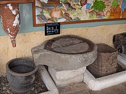
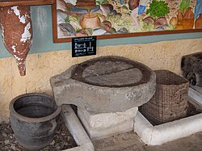
加利利的考古证据表明，早在公元前 6000 年，橄榄就被制成了橄榄油[ 15 ] 。公元前 4500 年，在海法南部一个现已被淹没的史前定居点，人们也开始将橄榄制成橄榄油[ 16 ]。
东地中海的橄榄树和橄榄油生产可以追溯到古城邦埃勃拉（公元前2600-2240年）的档案，这些档案位于阿勒颇郊区。其中保存着数十份可追溯至公元前2400年的文件，描述了国王和王后的土地。这些文件属于一座泥板图书馆，由于在摧毁宫殿的大火中被烧毁，因此保存完好。后来的资料来源是《塔纳赫》中对石油的频繁提及。[ 17 ]
公元前2000年以前的埃及王朝从克里特岛、叙利亚和迦南进口橄榄油，橄榄油是重要的贸易和财富来源。在爱琴海纳克索斯岛的一座古墓中，人们发现了4000多年前的罐子，里面盛有橄榄油的残骸。公元前1960年左右生活在迦南北部的埃及流亡者辛努赫，曾记载过那里盛产橄榄树。 [ 18 ]米诺斯人将橄榄油用于宗教仪式。橄榄油成为米诺斯文明的主要产品，人们认为它象征着财富。[ 19 ]
橄榄油也是迈锡尼文明时期（约公元前 1450-1150 年）希腊的主要出口产品。[ 20 ] [ 10 ]学者们认为，橄榄油的制作方法是将橄榄放在编织垫中挤压，然后储存在桶中。这种工艺从青铜时代就为人所知，埃及人曾使用过，并一直沿用到希腊化时期。[ 10 ]在铁器时代，犹大 低地及其周边的定居点，包括以革伦、亭拿和基色，成为橄榄油生产和贸易的重要枢纽。[ 21 ]在以色列王国首都发现的撒马利亚陶片中有证据表明“洗净油”，据信该术语指的是初榨橄榄油。[ 21 ]
 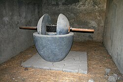
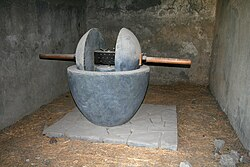
罗马征服埃及、希腊和小亚细亚后，橄榄油作为商业商品的重要性日益提升，地中海沿岸的贸易也随之增多。在罗马共和国和罗马帝国的发展过程中，橄榄树遍布整个地中海盆地。据历史学家老普林尼记载，到公元1世纪，意大利就拥有“价格合理的优质橄榄油”——“地中海最好的橄榄油”。[需要引用]随着公元5世纪橄榄产量的扩大，罗马人开始采用更为先进的生产技术，例如橄榄压榨机和橄榄榨汁机（如左图所示）。[ 10 ]东地中海地区至今仍保留着许多古老的压榨机，其中一些可以追溯到罗马时期，至今仍在使用。[ 22 ] 1795年，约瑟夫·格雷厄姆发明了液压压榨系统，大大提高了生产力。 [ 10 ]
 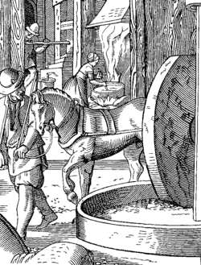
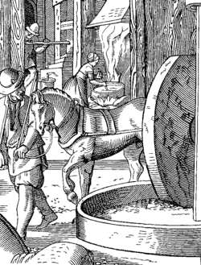
象征主义和神话
编辑橄榄树历来是国家间和平的象征。它在希腊神话中扮演着宗教和社会角色，尤其是在雅典城中。雅典城以女神雅典娜的名字命名，因为她赠予的橄榄树被认为比竞争对手波塞冬赠予的盐泉更为珍贵。[ 10 ]
品种
编辑橄榄品种繁多，每种都有其独特的风味、质地和保质期，这使其或多或少地适用于不同的用途，例如直接用于制作面包或沙拉，间接用于家庭烹饪或餐饮，以及工业用途，例如动物饲料或工程应用。[ 23 ]在成熟阶段，橄榄果实的颜色会从绿色变为紫色，然后变成黑色。橄榄油的口味特征取决于橄榄果实的成熟度和采摘时的成熟度。[ 23 ]
用途
编辑烹饪用途
编辑
 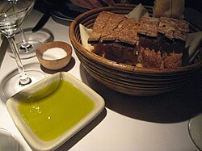
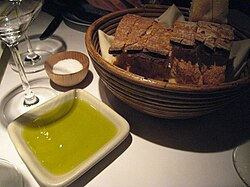
橄榄油是地中海周边国家的重要食用油，也是地中海美食的三大主食植物之一，另外两种是小麦（用于面食、面包和蒸粗麦粉）和葡萄，用作甜点水果和酿酒。[ 24 ]
特级初榨橄榄油主要用作调味品和沙拉酱的原料。如果不加热，味道会更浓郁。它也可以用来炒菜。
当特级初榨橄榄油加热到 210–216 °C (410–421 °F) 以上时，根据其游离脂肪酸含量，油中未精炼的颗粒会被烧焦。这会导致口感变差。精炼橄榄油适合油炸，因为烟点更高，味道更温和。[ 25 ]特级初榨油的烟点约为 180–215 °C (356–419 °F)，[ 1 ]高品质油的烟点更高，[ 26 ]而精炼淡橄榄油的烟点高达 230 °C (446 °F)。[ 1 ]它们可以用于油炸，这与普遍的误解相反，人们普遍认为没有哪种橄榄油的烟点和许多其他植物油一样高。误解是，在这么高的温度下加热会影响口感或营养。[ 27 ] [ 28 ]
宗教用途
编辑基督教
编辑罗马天主教、东正教和英国圣公会都将橄榄油用作慕道者圣油（用于祝福和强化准备受洗的人）和病人圣油（用于施行病人傅油圣事或临终涂油圣事）。橄榄油与香脂等香料混合后，由主教祝圣为圣油，用于施行坚振圣事（象征圣灵的坚固）、用于洗礼和神父及主教的授职仪式、用于祭坛和教堂的祝圣，以及传统上用于君主加冕时的傅油礼。
东正教基督徒至 今仍在教堂、家庭祈祷角和墓地使用油灯。守夜灯由一个装满橄榄油的供奉玻璃杯组成，玻璃杯漂浮在半英寸深的水面上。玻璃杯有一个金属支架，可以悬挂在墙上 的支架上或放在桌子上。一个点燃灯芯的软木浮子漂浮在油面上。为了熄灭火焰，需要小心地将浮子压入油中。简易油灯的制作方法很简单：将棉球浸泡在橄榄油 中，然后将其做成尖状。点燃棉球，使其燃烧直至油完全耗尽，剩余的棉花也随之燃尽。橄榄油是教堂和墓地常见的祭品。
耶稣基督后期圣徒教会使用经圣职祝福的初榨橄榄油来为病人涂油。[ 29 ]
犹太教
编辑在犹太人的习俗中，以色列支派出埃及时，在圣幕礼仪中，橄榄油是唯一允许在七枝烛台上使用的燃料，后来也允许在耶路撒冷的永久圣殿中使用。橄榄油的提取方法是使用从橄榄中榨出的第一滴油，并由祭司们将其圣化，只供圣殿使用，并储存在特殊的容器中。在现代，虽然光明节时也可以用蜡烛点燃烛台，但人们更喜欢用油容器来模仿原始的烛台。[ 30 ]
在古代以色列的犹太教中，橄榄油也被用来配制祭司、国王、先知和其他人的圣膏油。 [ 31 ]
其他
编辑橄榄油也是一种天然安全的润滑剂，可用于润滑厨房机械（研磨机、搅拌机、炊具等）。它还可以用于照明（油灯）或作为肥皂和清洁剂的基底。[ 32 ]一些化妆品也使用橄榄油作为基底，[ 33 ]它也可以用作机油的替代品。[ 34 ] [ 35 ] [ 36 ]橄榄油在硒化镉量子点的合成中也被用作溶剂和配体。[ 37 ]
拉涅利·费洛·德拉·托雷奖（Ranieri Filo della Torre）是一项国际文学奖，旨在表彰与特级初榨橄榄油相关的作品。该奖项每年颁发给与特级初榨橄榄油相关的诗歌、小说和非小说类作品。
萃取
编辑| 了解更多 |
 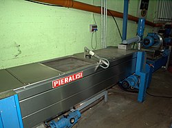
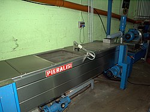
 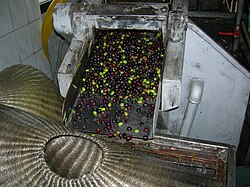
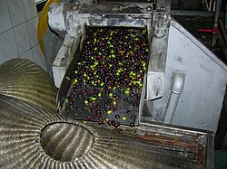
橄榄油的生产方法是将橄榄研磨，然后通过机械或化学方法提取。青橄榄通常会产生较苦的油，而过熟的橄榄则会产生发酵缺陷。因此，为了获得优质的橄榄油，必须确保橄榄完全成熟。整个过程通常如下：
- 使用大磨石（传统方法）、锤子、刀片或圆盘磨机（现代方法）将橄榄磨成糊状。
- 如 果使用石磨研磨，橄榄糊通常会在石磨下停留 30 至 40 分钟。研磨过程较短，产生的橄榄糊会更粗糙，产油量较少，口感也不那么成熟；研磨过程较长，可能会增加橄榄糊的氧化并降低风味。研磨后，将橄榄糊铺在纤维 盘上，纤维盘层叠成柱状，然后放入压榨机。然后对柱子施加压力，将植物液体与橄榄糊分离。这种液体仍然含有大量的水。传统上，油是靠重力从水中分离的（油 的密度比水小）。这种非常缓慢的分离过程已被离心分离所取代，离心分离技术更快、更彻底。离心机的一个出口用于分离（较重的）水分，另一个出口用于分离 油。橄榄油中不应含有大量的植物水，因为这会加速微生物对有机物的降解过程。小型油厂的分离并不总是完美的；因此，在油瓶底部可以发现含有有机颗粒的小水 状沉积物。
- 现代研磨机可在几秒钟内将橄榄研磨成糊状。研磨后，将糊状物放入特定容器中缓慢搅拌20至30分钟（搅拌），使微小的油滴聚集成更大的油滴，从而有利于机械萃取。然后，通过离心压榨糊状物/随后，如前所述，在第二次离心过程中将水与油分离。
仅通过上述物理（机械）方法生产的油称为初榨油。[ 38 ]特级初榨橄榄油是满足特定高化学和感官标 准（低游离酸度，无或极少感官缺陷）的初榨橄榄油。更高等级的特级初榨橄榄油主要取决于有利的气候条件；例如，开花期的干旱会导致橄榄油质量降低（初 榨）。橄榄树每隔几年就会结出丰收的果实，因此隔年就会出现丰收（中间年份产量较低）。然而，橄榄树的质量仍然取决于天气。
- 有时，生产的橄榄油会经过过滤，以去除残留的固体颗粒，这些颗粒可能会缩短产品的保质期。标签上可能会注明橄榄油未经过滤，这意味着口感会有所不同。未经过滤的新鲜橄榄油通常略带浑浊，因此有时被称为浑浊橄榄油。 这种橄榄油过去只在小规模生产商中流行，但现在正逐渐流行起来，这与消费者对加工程度较低的产品的需求相符。但一般来说，如果在生产后不久没有品尝或食 用，过滤后的橄榄油应该是首选：“一些生产商认为特级初榨橄榄油不需要过滤，而且过滤会损害油的质量。这种观点应该被视为错误的，可能是由于操作不当造成 的。事实上，即使经过最有效的离心精加工，初榨橄榄油中仍会悬浮着细小颗粒，其中含有水分和酶，这些细小颗粒可能会损害油的稳定性并破坏其感官品质。…… 过滤使特级初榨橄榄油更稳定，也更具吸引力。如果不去除悬浮颗粒，它们会慢慢聚集并絮凝，在储存容器的底部形成沉积物。这种沉积物会持续存在酶促腐败的风 险，在最坏的情况下，还会滋生厌氧微生物，进一步造成腐败并带来卫生风险。……建议在离心分离和精加工后尽快进行过滤。” [ 39 ]
古代黎凡特
编辑在古代黎凡特，人们使用三种方法来生产不同等级的橄榄油。[ 40 ]最优质的橄榄油来自完全发育成熟的橄榄，这些橄榄仅从树顶采摘，[ 41 ]并轻轻压榨，“因为轻压出来的油非常甜，非常稀薄”。[ 42 ]其余的橄榄则用更重的重量压榨，[ 42 ]成熟度各不相同。[ 41 ]劣质油来自未成熟的橄榄，这些橄榄被储存了很长时间，直到它们变软或开始皱缩，更适合研磨。[ 43 ]其他的橄榄则被长时间放置在地坑中，使其出汗和腐烂，然后再研磨。[ 44 ]根据《地理耕作学》 ，储存油时会添加盐和少量硝石。 [ 42 ]
在黎凡特国家，有时会从未成熟的橄榄中提取一种味道辛辣的绿色油，这种油在中世纪被称为anpeqinon（古希腊语：ὀμφάκιον, ὀμφάχινον；阿拉伯语：زيت الأنفاق），是拉丁语oleum omphacium的讹用，用于烹饪和医药。[ 45 ] [ 46 ] [ 47 ]如今，这种油在英语中被称为“初榨油”。[ 45 ]
果渣处理
编辑剩余的半固体废弃物被称为果渣，其中含有少量（约 5-10%）的油，这些油无法通过进一步压榨提取，只能用化学溶剂提取。提取过程由专门的化工厂完成，而不是在榨油厂。最终得到的油被称为果渣油。[ 48 ]
处理橄榄废料是一项环境挑战，因为欧盟每年产生的废水高达数百万吨（数十亿升），这些废水生物降解性差，对植物有毒，而且无法通过传统的水处理系统进行处理。[ 48 ]传统上，橄榄果渣会被用作堆肥或开发为潜在的生物燃料，尽管这些用途因果渣中含有化学物质而引发担忧。[ 48 ]一种被称为橄榄果渣“增值”的工艺正在研发中，包括额外加工以获得增值副产品，如动物饲料、人类产品的食品添加剂以及可能供人类使用的酚类和脂肪酸提取物。[ 48 ]
全球市场
编辑生产
编辑|
|
665,709 |
|
|
331,038 |
|
|
313,300 |
|
|
302,400 |
|
|
235,200 |
|
|
189,423 |
|
|
181,500 |
|
|
137,753 |
|
世界
|
2,743,216 |
| 来源：联合国粮农组织统计数据库[ 4 ] | |
2022年，全球橄榄油产量为270万吨，其中西班牙产量最高，占总产量的24%（见表）。其他主要生产国包括意大利、希腊和土耳其（见表）。
西班牙安达卢西亚哈恩省的维拉卡里略是橄榄油产地之一。西班牙 75% 的橄榄油产量来自安达卢西亚地区，尤其是哈恩省，该省出产了西班牙 70% 的橄榄油。[ 49 ]世界上最大的橄榄油厂（西班牙语为almazara ）位于哈恩省的维拉卡里略镇，每天可加工 2500 吨橄榄。[ 49 ]
意大利的主要产区是卡拉布里亚大区，尤其是普利亚大区。这些地区出产许多PDO和PGI特级初榨橄榄油。托斯卡纳大区[ 50 ]、卢卡、佛罗伦萨和锡耶纳等城市也生产特级初榨橄榄油，这些城市也是“橄榄油之城”协会的成员。[ 51 ]西班牙橄榄油出口量约65%来自意大利。[ 52 ]
全球消费
编辑希腊是世界上人均橄榄油消费量最高的国家，每年约为 24 升。[ 53 ]西班牙的消费量为 15 升；意大利为 13 升；[ 53 ]以色列约为 3 升。[ 54 ]加拿大消费 1.5 升，美国消费 1 升。[ 53 ]
规定
编辑国际橄榄理事会（IOC）是由生产橄榄或橄榄制品（例如橄榄油）的国家组成的政府间组织。IOC正式管理着95%的国际橄榄生产，并影响着剩余的生产。欧盟负责监管不同受保护的橄榄油原产地标签的使用。 [ 55 ]
美国不是国际奥委会的成员国，也不受其管辖，但 2010 年 10 月 25 日，美国农业部采用了新的自愿性橄榄油分级标准，该标准与国际奥委会的标准非常相似，但针对美国种植的橄榄的特性做了一些调整。[ 56 ]美国海关关于“原产国”的规定规定，如果标签上显示了非原产国，则必须在标签的同一侧以大小相当的字母标明真正的产地，以免误导消费者。[ 57 ] [ 58 ]然而，大多数美国主要品牌仍然在正面标签上用大写字母标注“意大利进口”，而在背面用很小的字体标注其他产地。[ 59 ] “事实上，标有‘意大利’的橄榄油通常来自土耳其、突尼斯、摩洛哥、西班牙和希腊。” [ 60 ]这使得人们无法确定橄榄油中真正来自意大利的比例。
商业级
编辑 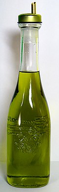
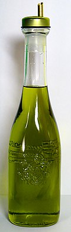
所有生产都始于将橄榄果压碎或压榨，将其制成橄榄糊。将糊状物搅拌（缓慢搅拌或混合），使微小的油滴凝聚。然后，使用压榨机（传统方法）或离心机（现代方法）将油从水分和果肉中分离出来。压榨或离心后剩余的残渣中也能产生少量油，称为果渣。
表征橄榄油特性的一个参数是其酸度。[ 61 ]在本文中，“酸度”并非指pH值意义上的化学酸度，而是游离油酸的百分比（以重量计）。橄榄油的酸度是衡量橄榄油中甘油三酯水解程度的标准：随着橄榄油的降解和氧化，更多的脂肪酸会从甘油酯中释放出来，导致游离酸度增加，从而加剧水解酸败。[ 62 ]酸败不仅会影响橄榄油的口感和颜色，还会影响其营养价值。[ 63 ]
衡量橄榄油化学降解程度的另一个指标是过氧化值[ 64 ]，它衡量的是橄榄油被自由基氧化的程度，从而导致氧化酸败。橄榄油中含有的酚酸也会增加其香气和风味的酸性。 [ 65 ]
从橄榄果中提取的油可分为以下等级：
- 初榨橄榄油是指仅使用机械方法生产，未进行任何化学处理的橄榄油。“初榨橄榄油”一词，就生产方法而言，涵盖所有等级的初榨橄榄油，包括特级初榨、初榨、普通初榨和低级初榨橄榄油，具体等级取决于橄榄油的质量（见下文）。
- Lampante 初榨橄榄油指通过初榨（机械）方法提取的橄榄油，未经进一步精炼则不宜食用；“lampante”是意大利语“lampa”（意为“灯”）的定语形式，指此类油在油灯中的用途。初榨的Lampante橄榄油可用于工业用途，或经过精炼（见下文）后可食用。[ 66 ]
- 精炼橄榄油是指采用不改变其甘油结构的任何等级的精炼方法，从任何等级的初榨橄榄油中提取的橄榄油。精炼过程会去除橄榄油的颜色、气味和风味，留下一种非常纯净的橄榄油，无味、无色、无臭，且游离脂肪酸含量极低。因此，以特级初榨橄榄油和初榨橄榄油等级出售的橄榄油不得含有任何精炼油。[ 66 ]
- 粗橄榄果渣油是用溶剂或其他物理方法处理橄榄果渣（压榨橄榄以生产初榨橄榄油后剩下的糊状物）而获得的油，其中不包含通过再酯化工艺获得的油，也不包含任何与其他油类的混合物。之后，粗橄榄果渣油被进一步精炼成精炼橄榄果渣油，再与初榨橄榄油重新混合以提升口感，最终被称为橄榄果渣油。[ 66 ]
 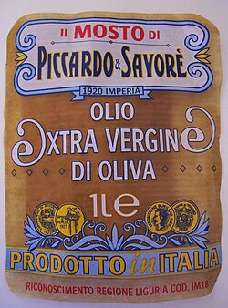
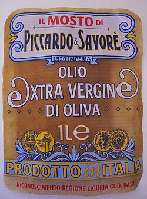
国际橄榄理事会
编辑在遵守国际橄榄理事会标准的国家[ 67 ]以及澳大利亚，以及在美国农业部自愿标签标准的美国：
特级初榨橄榄油是通过冷机械萃取获得的初榨橄榄油的最高等级，不使用溶剂或精炼方法。[ 66 ] [ 68 ]它的游离酸含量不超过 0.8% ，被认为具有上乘的口感，带有一些果香，没有明显的感官缺陷。[ 69 ]在许多生产国，特级初榨橄榄油占石油总量的比例不到 10%；在一些地中海国家，这一比例要高得多。
国际橄榄理事会要求特定橄榄油的果味属性中值高于零，以满足特级初榨橄榄油分类的标准。
初榨橄榄油是较低等级的初榨橄榄油，游离酸度高达 2.0%，被认为口感良好，但可能存在一些感官缺陷。
精制橄榄油是 指使用木炭和其他化学及物理过滤方法精制而成的初榨橄榄油，这些方法不会改变橄榄油的甘油结构。其游离酸度（以油酸计）不超过每100克0.3克 （0.3%），其他特性符合本标准中此类橄榄油的标准。精制橄榄油是通过精炼初榨橄榄油来消除其高酸度或感官缺陷而获得的。标有纯橄榄油或橄榄油的橄榄油主要由精制橄榄油制成，并添加少量初榨橄榄油以改善口感。
橄榄果渣油是精炼的橄榄油渣油，通常会与一些初榨橄榄油混合。它适合食用，但不能简单地被称为橄榄油。与纯橄榄油或初榨橄榄油相比，橄榄果渣油的风味更中性，因此对注重口味的用户来说吸引力较小；然而，它的脂肪成分与普通橄榄油相同，因此具有相同的健康益处。橄榄果渣油的烟点也很高，因此在一些国家的餐馆和家庭烹饪中被广泛使用。
美国
编辑美国不是国际奥委会的成员国，也不实施其分级标准，但 2010 年 10 月 25 日，美国农业部(USDA) 制定了橄榄油和橄榄果渣油分级标准，该标准与国际奥委会的标准非常相似：[ 70 ] [ 71 ]
- 美国特级初榨橄榄油，指风味和气味极佳且游离脂肪酸含量不超过每100克0.8克（0.8%）的油；
- 美国初榨橄榄油，指风味和气味相当好，且游离脂肪酸含量不超过每 100 克 2 克（2%）的油；
- 美国初榨橄榄油未经进一步加工不适合人类食用，是一种味道和气味较差的初榨（机械提取）橄榄油，相当于国际奥委会的lampante油；
- 美国橄榄油是初榨油和精炼油的混合物；
- 美国精制橄榄油是由精制油制成的油，但在加工过程中有一些限制。
这些等级是自愿的。美国农业部提供认证服务，需付费。[ 71 ]
2014年，加州通过了一套针对加州产橄榄制成的橄榄油的标准。加州橄榄油产量超过5000加仑的生产商必须遵守加州食品和农业部关于橄榄油、精制橄榄油和橄榄果渣油的等级和标签标准。该标准与其他州、联邦和国际官方橄榄油标准相结合。[ 72 ]
一些橄榄生产者协会，如北美橄榄油协会和加州橄榄油委员会，也在美国境内提供分级和认证服务。[ 73 ] [ 74 ]橄榄油学家尼古拉斯·科尔曼认为，加州橄榄油委员会的认证是美国最严格的自愿分级体系。[ 75 ]
原产国可以通过印在酒瓶或标签上的一个或两个字母的国家代码来识别。国家代码包括：I=意大利、GR=希腊、E=西班牙、TU=突尼斯、MA=摩洛哥、CL=智利、AG=阿根廷、AU=澳大利亚。
标签措辞
编辑- 橄榄油的不同名称表明了其加工程度和品质。特级初榨橄榄油是最高等级的橄榄油，其次是初榨橄榄油。“初榨”一词表示橄榄经过压榨提取；提取过程中未使用任何热量或化学品，纯净无瑕。初榨橄榄油富含最高水平的多酚，这是一种抗氧化剂，与健康密切相关。[ 76 ]
- 橄榄油，有时被称为“由精制橄榄油和初榨橄榄油制成”，是指精制橄榄油与初榨橄榄油的混合。[ 66 ] 纯橄榄油、经典橄榄油、淡橄榄油和特淡橄榄油是非传统橄榄油消费国制造商为这些产品引入的术语，旨在向消费者表明其成分仅为100%橄榄油，以及不同的口味浓度。与消费者普遍的看法相反，这些橄榄油的卡路里含量并不比特级初榨橄榄油低，正如其名称所暗示的那样。[ 77 ]
- 冷榨或冷萃取的意思是“在加工过程中，橄榄油的加热温度未超过特定温度（通常为 27 °C (80 °F)），因此保留了更多营养成分，且不易降解”。[ 78 ]欧洲对冷萃取和冷压的区别进行了规范。在欧洲，使用离心机（一种现代的大批量萃取方法）的橄榄油必须标记为“冷萃取”，而只有物理压榨的橄榄油才可以标记为“冷压”。在世界许多地方，例如澳大利亚，使用离心萃取的生产商仍将其产品标记为“冷压”。
- 首次冷榨是指“橄榄果实仅被压榨一次，即第一次压榨。 ‘冷’指的是果实被压榨时的温度范围”。[ 79 ]在
卡拉布里亚（意大利），橄榄是在十月采摘的。在托斯卡纳或利古里亚等地区，橄榄是在十一月采摘并研磨的，通常是在夜间，由于温度过低，如果不加热，就无法
有效加工。为了仅通过物理方法高效提取橄榄油，橄榄糊通常会被加热到高于环境温度（可能低至
10-15°C）的温度。在意大利南部或北非等温暖地区，橄榄的压榨温度可能要高得多，尽管无需加热。虽然压榨温度尽可能低（通常低于
25°C）很重要，但目前国际上尚无“冷榨”的可靠定义。
此外，初榨橄榄油没有“二次”压榨，因此“第一次压榨”一词仅指橄榄油是在压榨机中生产的，而非其他可能的方法。 - 受保护的原产地名称（PDO）和受保护的地理标志（PGI）是指橄榄油“因其原产地和生产方式而具有卓越的特性和品质”。 [ 80 ]
- 标签上可能注明该油是在某个国家装瓶或包装的。但这并不一定意味着该油产自该国。有时，油的产地可能会标注在标签的其他地方；它可能是来自多个国家的油的混合物。[ 59 ]
- 美国食品药品监督管理局允许在橄榄油标签上印上这样一项声明：“有限且非结论性的科学证据表明，每天食用约两汤匙（23 克）橄榄油可降低患冠心病的风险。” [ 81 ]
掺假
编辑有人指控，尤其是在意大利和西班牙，监管有时可能松懈且存在腐败现象。[ 82 ]据称，主要的托运人经常在橄榄油中掺假，因此在意大利以“特级初榨”形式出售的橄榄油中，只有约 40% 实际上符合规格。[ 83 ]在某些情况下，添加了色素和香精的菜籽油（从油菜籽中提取）也被贴上橄榄油的标签出售。[ 84 ]这种广泛的欺诈行为促使意大利政府在 2007 年强制要求橄榄油销售公司制定一项新的标签法，根据该法，每瓶意大利橄榄油都必须标明生产的农场和压榨厂，并显示所用油的详细成分（对于混合油）。[ 85 ]然而，2008 年 2 月，欧盟官员对这项新法律提出质疑，指出根据欧盟规则，这种标签应该是自愿的，而不是强制的。[ 84 ]根据欧盟规定，即使橄榄油中只含有少量意大利油，也可以作为意大利产品出售。[ 85 ]
特级初榨橄榄油的要求非常严格，需要检查是否存在“感官缺陷”，包括：腐臭味、霉味、霉味、酒味（醋味）和泥状沉淀物。这些缺陷可能由多种原因造成。最常见的原因包括：
- 原料（橄榄）受感染或被弄脏
- 收成不足，橄榄与土壤接触[ 86 ]
2008 年 3 月，400 名意大利警察开展了“黄金油行动”，逮捕了 23 人，没收了 85 个农场。此前，调查揭露了一项大规模的阴谋，即把来自其他地中海国家的橄榄油改贴意大利标签。[ 87 ] 2008 年 4 月，另一项行动在意大利北部和南部的 9 个省份查封了 7 家橄榄油工厂，逮捕了 40 人，罪名是他们在意大利国内和国外向葵花籽油和大豆油中添加叶绿素，并将其作为特级初榨橄榄油出售；25,000 升假油被查获，并被阻止出口。[ 88 ]
2011 年3月15日，意大利佛罗伦萨检察院与林业部门联合起诉了西班牙公司Grupo SOS（近期更名为Deoleo）旗下品牌Carapelli的两名经理和一名高管。指控涉及伪造文件和食品欺诈。Carapelli律师内里·皮努奇 （Neri Pinucci）表示，公司对这些指控并不担心，并表示“此案是基于文件中的违规行为”。[ 89 ]
2012年2月，西班牙当局调查了一起国际橄榄油欺诈案，该案中，棕榈油、鳄梨油、葵花籽油和其他廉价橄榄油被冒充为意大利橄榄油。警方表示，这些橄榄油是在一家工业生物柴油厂混合的，并经过特殊处理以掩盖可能暴露其真实性质的标记。根据西班牙国民警卫队的一份声明，这些橄榄油无毒，也不会对健康构成危害。在警方和西班牙税务机关为期一年的联合调查（即“卢塞纳行动”的一部分）中，共有19人被捕。[ 90 ]
使用小字体标明混合油的产地，被掺假和混合橄榄油制造商利用成了法律漏洞。[ 91 ]
记者汤姆·穆勒 (Tom Mueller) 调查了橄榄油行业的犯罪和掺假行为，在《纽约客》杂志上发表了文章“滑溜的生意”，[ 83 ]随后在 2011 年出版了《特级初榨橄榄油》一书。2016 年 1 月 3 日，比尔·惠特克 (Bill Whitaker)在哥伦比亚广播公司 (CBS) 新闻节目中接受了穆勒和意大利当局的采访。[ 92 ] [ 93 ]据报道，上个月在意大利销售了 5,000 吨掺假橄榄油，有组织犯罪严重卷入其中——使用了“Agrimafia”一词。穆勒指出，掺假橄榄油的利润率是毒品可卡因的 三倍。他说，在意大利销售的橄榄油中有 50% 以上是掺假的，在美国销售的橄榄油中有 75% 到 80% 是掺假的。惠特克报道说，在美国一家超市购买了三份“特级初榨橄榄油”样品并进行了测试；三个样品中有两个不符合要求的标准，其中一个来自美国最畅销品牌 的样品质量特别差。
2017年2月初，意大利宪兵队逮捕了卡拉布里亚黑手党“光荣会” （Piromalli 'ndrina ，意为“光荣会”）的33名嫌疑人，据称该组织向美国出口假冒特级初榨橄榄油；而这些假冒橄榄油实际上是贴有欺诈性标签的廉价橄榄果渣油。[ 94 ]不到一年前，美国电视节目《 60分钟》曾警告称，“橄榄油行业已被黑手党腐蚀”，“农业黑手党”每年的产值高达160亿美元。一位接受该节目采访的宪兵队调查员表示，“橄榄油造假已持续近四千年”，但如今，“坏人尤其容易掺假橄榄油，或者将劣质橄榄油与特级初榨橄榄油混合”。[ 95 ]几周后，《福布斯》杂志的一篇报道称，“据可靠消息称，（美国）市场上 80% 的意大利橄榄油都是假冒的”，并且“意大利南部（普利亚、翁布里亚和坎帕尼亚）正在揭露一场大规模的橄榄油丑闻”。[ 96 ]
质量控制和欺诈
编辑2024年7月，欧盟报告称，橄榄油欺诈和标签错误案件显著增加。欧盟委员会年度食品欺诈报告显示，橄榄油仍然是最常见的掺假食品之一，掺假事件数量创历史新高。[ 97 ]
贴错标签和掺假
编辑最常见的橄榄油欺诈形式包括：
- 将低等级橄榄油误贴为特级初榨橄榄油
- 用更便宜的植物油稀释橄榄油
- 虚假宣称非欧盟石油产自欧盟
这些欺诈行为不仅欺骗消费者，也损害了合法生产商的声誉，特别是来自地中海传统橄榄种植区的生产商的声誉。[ 97 ]
欧盟的回应
编辑为了打击日益增多的欺诈案件，欧盟采取了多项措施：
- 加强对橄榄油运输的检查和检测
- 加强对生产商和分销商的可追溯性要求
- 对犯有欺诈罪的公司处以更严厉的处罚
- 加强成员国食品安全当局之间的合作
欧盟还发起了一项公众意识运动，教育消费者了解橄榄油的质量以及如何识别真伪。[ 97 ]
对行业的影响
编辑欺诈案件激增导致：
- 由于合规要求的提高，诚实生产者的生产成本增加
- 由于廉价、掺假的产品充斥市场，正宗特级初榨橄榄油的市场份额可能会下降
- 消费者对橄榄油质量声明的怀疑日益增加
业内专家强调支持信誉良好的生产商的重要性，并敦促消费者在购买橄榄油时要更加警惕，尤其是在价格与所宣称的品质不符却异常低的时候。[ 97 ]
成分
编辑
橄榄油主要由油酸、亚油酸、棕榈酸和其他脂肪酸的混合甘油三酸酯[ 98 ] [ 99 ]以及微量角鲨烯（含量高达0.7%）和甾醇（约0.2%为植物甾醇和生育甾醇）组成。橄榄油的成分随品种、产地、海拔、采收时间和提取工艺的不同而变化。
| 脂肪酸 | 类型 | 百分比（m/m 甲酯） | 参考 |
|---|---|---|---|
| 油酸 | 单不饱和脂肪酸 | 55% 至 83% | [ 98 ] |
| 亚油酸 | 多不饱和脂肪酸（ω-6） | 3.5% 至 21% | [ 98 ] [ 99 ] |
| 棕榈酸 | 饱和 | 7.5% 至 20% | [ 98 ] |
| 硬脂酸 | 饱和 | 0.5% 至 5% | [ 98 ] |
| α-亚麻酸 | 多不饱和脂肪酸（ω-3） | 0至1.5％ | [ 98 ] |
与其他植物油的比较
编辑| 类型 | 加工 处理[ 101 ] |
饱和 脂肪酸 |
单不饱和 脂肪酸 |
多不饱和 脂肪酸 |
烟点 | ||||
|---|---|---|---|---|---|---|---|---|---|
| 总计[ 100 ] | 油酸 （ ω−9） |
总计[ 100 ] | α-亚麻酸 （ ω−3） |
亚油酸 （ ω−6） |
ω−6:3 比率 |
||||
| 牛油果[ 102 ] | 11.6 | 70.6 | 67.9 | 13.5 | 1 | 12.5 | 12.5:1 | 250 摄氏度（482 华氏度）[ 103 ] | |
| 巴西坚果[ 104 ] | 24.8 | 32.7 | 31.3 | 42.0 | 0.1 | 41.9 | 419：1 | 208 摄氏度（406 华氏度）[ 105 ] | |
| 油菜籽[ 106 ] | 7.4 | 63.3 | 61.8 | 28.1 | 9.1 | 18.6 | 2:1 | 204 摄氏度（400 华氏度）[ 107 ] | |
| 椰子[ 108 ] | 82.5 | 6.3 | 6 | 1.7 | 0.019 | 1.68 | 88:1 | 175 摄氏度（347 华氏度）[ 105 ] | |
| 玉米[ 109 ] | 12.9 | 27.6 | 27.3 | 54.7 | 1 | 58 | 58:1 | 232 摄氏度（450 华氏度）[ 107 ] | |
| 棉籽[ 110 ] | 25.9 | 17.8 | 19 | 51.9 | 1 | 54 | 54:1 | 216 摄氏度（420 华氏度）[ 107 ] | |
| 棉籽[ 111 ] | 氢化 | 93.6 | 1.5 | 0.6 | 0.2 | 0.3 | 1.5:1 | ||
| 亚麻籽/亚麻籽[ 112 ] | 9.0 | 18.4 | 18 | 67.8 | 53 | 十三 | 0.2:1 | 107 摄氏度（225 华氏度） | |
| 葡萄籽[ 113 ] | 9.6 | 16.1 | 15.8 | 69.9 | 0.10 | 69.6 | 非常高 | 216 摄氏度（421 华氏度） | |
| 大麻籽[ 114 ] | 7.0 | 9.0 | 9.0 | 82.0 | 22.0 | 54.0 | 2.5:1 | 166 摄氏度（330 华氏度）[ 115 ] | |
| 高油酸红花油[ 116 ] | 7.5 | 75.2 | 75.2 | 12.8 | 0 | 12.8 | 非常高 | 212 摄氏度（414 华氏度）[ 105 ] | |
| 特级初榨橄榄[ 117 ] | 13.8 | 73.0 | 71.3 | 10.5 | 0.7 | 9.8 | 14:1 | 193 摄氏度（380 华氏度）[ 105 ] | |
| 棕榈树[ 118 ] | 49.3 | 37.0 | 40 | 9.3 | 0.2 | 9.1 | 45.5:1 | 235 摄氏度（455 华氏度） | |
| 棕榈树[ 119 ] | 氢化 | 88.2 | 5.7 | 0 | |||||
| 花生[ 120 ] | 16.2 | 57.1 | 55.4 | 19.9 | 0.318 | 19.6 | 61.6:1 | 232 摄氏度（450 华氏度）[ 107 ] | |
| 米糠油 | 二十五 | 38.4 | 38.4 | 36.6 | 2.2 | 34.4 [ 121 ] | 15.6:1 | 232 摄氏度（450 华氏度）[ 122 ] | |
| 芝麻[ 123 ] | 14.2 | 39.7 | 39.3 | 41.7 | 0.3 | 41.3 | 138:1 | ||
| 大豆[ 124 ] | 15.6 | 22.8 | 22.6 | 57.7 | 7 | 51 | 7.3:1 | 238 摄氏度（460 华氏度）[ 107 ] | |
| 大豆[ 125 ] | 部分氢化 | 14.9 | 43.0 | 42.5 | 37.6 | 2.6 | 34.9 | 13.4:1 | |
| 高油酸葵花籽油[ 126 ] | 8.99 | 63.4 | 62.9 | 20.7 | 0.16 | 20.5 | 128:1 | 227 摄氏度（440 华氏度）[ 107 ] | |
| 核桃油[ 127 ] | 粗 | 9.1 | 22.8 | 22.2 | 63.3 | 10.4 | 52.9 | 5:1 | 160 摄氏度（320 华氏度）[ 128 ] |
酚类成分
编辑橄榄油中含有微量酚类物质（约 0.5%），如酪醇酯、羟基酪醇酯、油橄榄苦苷和橄榄苦苷，[ 65 ] [ 129 ]这些物质使特级初榨橄榄油具有苦味和刺激性的味道，也与橄榄油的香气有关。[ 130 ]橄榄油是至少 30 种酚类化合物的来源，其中包括油酸（橄榄成熟的标志物） [ 65 ] [ 131 ]和 α-生育酚（维生素 E家族八个成员之一）。[ 132 ]橄榄苦苷以及其他密切相关的化合物，如10-羟基油橄榄苦苷、橄榄苦苷和10-羟基橄榄苦苷，都是油酸的酪醇酯。
营养
编辑| 每100克（3.5盎司）的营养价值 | |||||||||||||
|---|---|---|---|---|---|---|---|---|---|---|---|---|---|
| 活力 | 3,700 千焦（880 千卡） | ||||||||||||
|
0克
|
|||||||||||||
|
100克
|
|||||||||||||
| 饱和 | 13.8克 | ||||||||||||
| 单不饱和脂肪酸 | 73克 | ||||||||||||
| 多不饱和 | 10.5克
0.8克
9.8克
|
||||||||||||
|
0克
|
|||||||||||||
|
|||||||||||||
| 其他成分 | 数量 | ||||||||||||
| 水 | 0克 | ||||||||||||
|
|
|||||||||||||
| †百分比是根据美国成年人的推荐量估算的[ 135 ] ，钾除外，钾的摄入量是根据美国国家科学院的专家建议估算的[ 136 ] | |||||||||||||
橄榄油 100% 为脂肪，不含碳水化合物、膳食纤维、蛋白质或水（表格）。
每 100 克（3.5 盎司）橄榄油可提供 884卡路里的食物能量，并且是维生素 E（96% DV）和维生素 K （57% DV）的丰富来源（占每日摄入量的 20% 或更多）（表格）。
一汤匙（13.5 克）橄榄油可提供 500 千焦（119 千卡）的食物能量，含有 13.5 克脂肪，其中包括 9.9 克单不饱和脂肪（主要为油酸）、1.4 克多不饱和脂肪（主要为亚油酸）和 1.9 克饱和脂肪（主要为棕榈酸）。[ 137 ]
潜在的健康影响
编辑 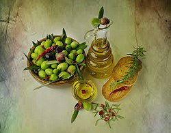
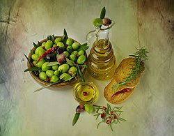
在美国，FDA允许橄榄油生产商在产品标签上标注以下合格的健康声明：[ 138 ] [ 139 ]
有限且尚无定论的科学证据表明，每天食用约2汤匙（23克）橄榄油可能降低患冠心病的风险，因为橄榄油中含有单不饱和脂肪。为了达到这一潜在益处，橄榄油需要替代等量的饱和脂肪，并且不增加每日总热量摄入。
欧洲食品安全局(EFSA) 于 2011 年进行的一项审查批准了橄榄油的健康声明，称其所含的多酚可防止血脂氧化[ 140 ] ，并且可以通过用油酸替代饮食中的饱和脂肪来维持正常的血液低密度脂蛋白胆固醇 (LDL-C)水平[ 141 ]。（另见：2012 年 5 月 16 日第 432/2012 号委员会条例 (EU)）。[ 142 ]尽管已获批准，但 EFSA 指出，食用橄榄油与维持正常（空腹）血液甘油三酯浓度、正常血液高密度脂蛋白胆固醇浓度和正常血糖浓度之间的因果关系尚未充分建立[ 143 ]。
2014 年的一项荟萃分析得出结论，增加橄榄油摄入量与降低全因死亡、心血管事件和中风的风险相关，而混合动植物来源的单不饱和脂肪酸并未显示出显著影响。[ 144 ] 2018 年的另一项荟萃分析发现，与低多酚橄榄油相比，高多酚橄榄油的摄入与总胆固醇、高密度脂蛋白胆固醇、丙二醛和氧化低密度脂蛋白（LDL）指标的改善相关，尽管该分析建议进行更长期的研究，并对非地中海人群进行更多调查。[ 145 ]
参见
编辑参考
编辑- ^ a b c跳转至： Gray, Sarah (2015). “用特级初榨橄榄油烹饪”。ACNEM期刊。34 (2) : 8–12。S2CID 132454216 。
- ^ De Alzaa, F.；Guillaume, C.；Ravetti, L. (2018年6月)。“不同市售油在加热过程中的化学和物理变化评估”。《科学营养健康学报》。2 (6): 2–11。原著存档于2021年5月6日。检索日期： 2021年5月6日。
- ^ “美国农业部：“橄榄油和橄榄果渣油分级手册” ” 。原版存档于 2014 年 10 月 31 日。检索日期：2013 年6 月 25 日。
- ^ a b跳转至： “2022年橄榄油产量，作物/地区/世界列表/产量/年份（精选列表）”。联合国粮食及农业组织，综合统计数据库（FAOSTAT）。2025年。检索日期：2025年2月9日。
- ^ Davidson, Alan (1999). 《牛津食物指南》。牛津大学出版社。sv Olives。ISBN ： 0-19-211579-0。
- ^ “国际橄榄理事会” 。原版存档于2018年10月26日。2011年10月5日检索。
- ^ Scanlon, Thomas F. (2005). “公元前六世纪希腊的鸡奸行为的传播与运动革命”，载于《古希腊罗马时期和西方古典传统中的同性欲望与爱情》，BC Verstraete 和 V. Provençal 编，哈灵顿公园出版社。
- ^ Kennell, Nigel M. “人体最必需品：后期希腊体育馆中的橄榄油及其副产品”，载于 Mark Joyal 编， In Altum：纽芬兰七十五年古典研究，2001 年；popis 第 119–133 页。
- ^ Himes, Norman E. (1963).避孕的医学史. Gamut Press. 第 86–87页.
- ^ a b c d e f g h i跳转至： Kapellakis，Iosif Emmanouil (2008)。“橄榄油的历史、生产和副产品管理”。环境科学与生物/技术评论。7 (1): 1–26。Bibcode ： 2008RESBT ... 7.... 1K。doi ：10.1007 / s11157-007-9120-9。S2CID 84992505 。
- ^ Foley, BP; Hansson, MC; Kourkoumelis, DP; & Theodoulou, TA (2012). “以双耳瓶DNA证据重新评估古希腊贸易”。《考古学杂志》，39(2)，389-398。
- ^ Riley, FR, “青铜时代克里特岛的橄榄油生产：米诺斯橄榄油的营养特性、加工方法和储存寿命”。《牛津考古学杂志》 21 :1:63–75 (2002)。
- ^ Hadjisavvas , Sophocles；Chaniotis, Angelos (2012)。“克里特岛和塞浦路斯的葡萄酒和橄榄油：社会经济方面” 。英国雅典研究学院。20 ：157–173。ISSN 2159-4996。JSTOR 23541207。
- ^ 纪尧姆·贝斯纳达；基于线粒体 DNA 多态性的地中海橄榄 ( Olea europaea L. ssp. europaea )的多重起源”， Comptes Rendus de l'Académie des Sciences – Series III – Sciences de la Vie 323 :2:173–181（2000 年 2 月）；布列塔尼，凯瑟琳； Michel Tersac 和 André Bervillé，“野生橄榄（oleaster， Olea europaea L.）和橄榄之间的遗传多样性和基因流：通过简单序列重复分析表明地中海盆地的几个普利奥-更新世避难区”，《生物地理学杂志》 33：11：1916（2006 年 11 月）。
- ^ 舒斯特，露丝 (2014年12月17日)。“加利利发现8000年前的橄榄油，是世界上已知最早的橄榄油。 ” 《国土报》 。原件存档于2018年2月7日。检索日期：2014年12月17日。
- ^ Galili, Ehud；Stanley, Daniel Jean；Sharvit, Jacob；Weinstein-Evron, Mina（1997年12月）。“以色列卡梅尔海岸附近水下定居点最早生产橄榄油的证据”。《考古学杂志》。24 ( 12 ): 1141–1150。Bibcode：1997JArSc..24.1141G。doi：10.1006/jasc.1997.0193。
- ^ 布朗，纳撒尼尔·R. (2011年6月11日)。“巴比伦河畔：近东背景及其对古代以色列和犹大权力结构的影响” (PDF) 。history.ucsc.edu。原版(PDF)存档于2014年8月10日。检索日期：2014年7月30日。
- ^ 加德纳，艾伦·H. (1916)。《西努赫故事笔记》。巴黎：荣誉冠军书店。原著存档于2019年4月2日。 2008年12月28日检索。
- ^ Riley, FR (2002年2月1日)。“青铜时代克里特岛的橄榄油生产：米诺斯橄榄油的营养特性、加工方法和储存寿命”。《牛津考古学杂志》。21 (1): 63–75。doi : 10.1111 /1468-0092.00149。ISSN 0262-5253。
- ^ Castleden, Rodney (2005).迈锡尼人. 伦敦和纽约: 劳特利奇出版社. 第107页. ISBN
978-0-415-36336-5原件存档于2023年1月15日。检索于2016年4月3日。
橄榄油产量巨大，想必是当时重要的财富来源。希腊南部的气候更适合种植橄榄，这一简单事实或许可以解释为何迈锡尼文明在南部比在北部发展得更快。橄榄油用途广泛，可用于烹饪、调味、制作肥皂、灯油，以及作为制造药膏的基料。
- ^ a b跳转至： Shafer-Elliott, Cynthia (2022)，Fu, Janling；Shafer-Elliott, Cynthia；Meyers, Carol (eds.)，《水果、坚果、蔬菜和豆类》，T&T Clark《希伯来圣经和古代以色列食物手册》，T&T Clark 手册（第 1 版），伦敦：T&T Clark，第 144 页，ISBN 978-0-567-67982-6，检索日期：2025 年7 月 27 日
- ^ Blázquez, JM (1992 年10月)。“关于贝提卡橄榄油出口到罗马和军队的最新研究”。《希腊与罗马》。39 (2): 173–188。doi : 10.1017/S0017383500024153。
- ^ a b跳转至： Nicole Sturzenberger (2007)。“橄榄加工废弃物管理：摘要” (PDF) 。oliveoil.ucdavis.edu。原版(PDF)存档于 2014 年 8 月 8 日。检索日期：2014 年7 月 30 日。
- ^ Essid, Mohamed Yassine (2012). “第二章：地中海食物的历史”。MediTerra ：地中海饮食促进可持续区域发展。巴黎政治学院出版社，第 51-69页。ISBN： 978-2724612486。原件存档于 2021 年 5 月 11 日。检索日期：2016 年5 月 12 日。
- ^ “橄榄油：精制橄榄油”。www.accc.gov.au 。原版存档于2018年7月19日。检索日期：2018年7月19日。
- ^ Peri, Claudio 编（2014 年）。特级初榨橄榄油手册。英国西萨塞克斯郡奇切斯特：John Wiley & Sons, Ltd.，第 356 页。ISBN 9781118460436. OCLC 861120215。
- ^ Gritzer, Daniel (2023年5月15日)。“用橄榄油烹饪：应该煎还是不煎？”。Serious Eats。原版存档于2024年5月18日。检索日期：2024年6月24日。
- ^ McManus, Lisa (2023年8月2日)。“橄榄油101：如何选购”。美国测试厨房。原版存档于2024年3月30日。检索日期：2024年6月24日。
- ^ Oaks, Dallin H. “治愈病人”。ChurchofJesusChrist.org 。原著存档于2019年 8 月 28 日。检索日期：2019 年7 月 16 日。
- ^ 巴比伦塔木德， Menachot 85b
- ^ Eisenberg, Ronald L.《犹太术语词典：犹太教语言指南》， ISBN 1589797299，2011年，第 299 页。
- ^ “从零开始制作肥皂工作坊” 。原版存档于2013年11月20日。检索日期：2013年11月23日。
- ^ “橄榄精华”。原版存档于2013年12月3日。2013年11月23日检索。
- ^ “卡斯蒂利亚橄榄油皂，西班牙，公元前2000年”。smith.edu。原件存档于2018年7月19日。检索日期：2014年7月30日。
- ^ “橄榄油合成肥皂” （PDF）。webpages.uidaho.edu。2010年。原件存档(PDF)于2018年7月19日。 2014年7月30日检索。
- ^ “加州橄榄油值得挥霍”。ucanr.edu（农业与自然资源部）。原版存档于2018年7月19日。检索日期：2014年7月30日。
- ^ Sapra, Sameer；Rogach, Andrey L.；Feldmann, Jochen ( 2006)。“橄榄油中单分散CdSe纳米晶体的无膦合成”。材料化学杂志。16 (33): 3391。doi : 10.1039/B607022A。
- ^ “特级初榨橄榄油和普通橄榄油有什么区别？”。OliveOil.com。2021年5月4日。原版存档于2021年5月24日。检索日期：2021年5月24日。
- ^ Peri, Claudio 编辑（2014 年）。特级初榨橄榄油手册。英国西萨塞克斯郡奇切斯特：John Wiley & Sons。第 155–156页。ISBN 9781118460450. OCLC 908158600。
- ^ 丹比，H . 编（1933）。《米拿哈特》。《米西拿》 。牛津：牛津大学出版社。8:4（第502页）。ISBN
0-19-815402-X。
{{cite book}}: ISBN / Date incompatibility (help) - ^ a b跳转至： Amar, Z. (2015).迈蒙尼德教义中的动植物（希伯来语）。Kfar Darom。第 73 页。OCLC 783455868。
{{cite book}}: CS1 maint: location missing publisher (link) - ^ a b c跳转至： Geoponika – 农业实践。第 1 卷。欧文·T译。伦敦：牛津大学。1805 年，第 288–289页。
- ^ 参见
Danby, H.编（1933 年）。《托霍罗斯》（Tohoroth）。《米什纳》。牛津：牛津大学出版社。9:5（第 729 页）。ISBN 0-19-815402-X。
{{cite book}}: ISBN / Date incompatibility (help) - ^ Amar, Z. (2015).迈蒙尼德教义中的动植物（希伯来语）。Kfar Darom。第74页。OCLC 783455868。
{{cite book}}: CS1 maint: location missing publisher (link)sv Mishnah Tohoroth 9:1（迈蒙尼德的评论） - ^ a b跳转至： Frankel, Rafael (1994). “以色列土地上的古代油坊和榨油机”。收录于 Etan Ayalon 主编的《圣地橄榄油的历史与技术》。译者：Jay C. Jacobson。特拉维夫，以色列：以色列土地博物馆和 Oléarus 出版社。第 23 页。ISBN 0-917526-06-6。
- ^ Mukaddasi (1906) [1967 年第 3 版]。德戈耶，MJ（编辑）。Kitāb Aḥsan at-taqāsīm fī ma´rifat al-aqālīm [地区知识的最佳部门]（阿拉伯语）。莱顿：布里尔。 p。 181.OCLC 313566614。 [需要澄清]
- ^ 阿马尔，Z .；塞里·亚龙 (2004)。十世纪耶路撒冷医生塔米米 (al-Tamimi) 描述的以色列和叙利亚土地（希伯来语）。拉马特-甘。 p。 78.国际标准书号
965-226-252-8. OCLC 607157392。
{{cite book}}: CS1 maint: location missing publisher (link)参见《巴比伦塔木德》，Menahot 86a，其中提到，用于生产这种油的橄榄尚未达到其自然成熟度的三分之一，并且它主要用作脱毛剂和调味肉。 - ^ a b c d跳转至： Berbel, Julio；Posadillo, Alejandro（2018 年 1 月 17 日）。“农业工业橄榄油副产品增值替代方案的审查与分析”。可持续性。10 ( 1): 237。Bibcode ：2018Sust ... 10..237B。doi ： 10.3390 /su10010237。hdl： 10396 / 17426。ISSN 2071-1050。
- ^ a b跳转至： Vivante, Lucy (2011年11月2日)。“Gruppo Pieralisi 为哈恩世界最大橄榄油厂提供动力”。《橄榄油时报》。原版存档于2015年11月17日。检索日期：2015年11月9日。
- ^ “托斯卡纳特级初榨橄榄油：卓越产品”。www.discovertuscany.com 。原版存档于2018年7月30日。检索日期：2018年7月30日。
- ^ “国家协会 Città dell'Olio – Citta dell'olio”。原始存档于2018年7月30日。检索日期：2018 年7 月 30 日。
- ^ “La marca Italia se queda con el aceite español. Noticias de Economía” . 《机密》（西班牙语）。原始存档于2017年10月19日。检索日期：2017 年10 月 19 日。
- ^ a b c跳转至： “橄榄油消费”。北美橄榄油协会。原版存档于2023年4月6日。检索日期：2023年4月6日。
- ^ “农业部橄榄油行业分析：以色列农民生产的橄榄油更多，以色列公众消费更多，但支付的费用更少”。GOV.IL 。原件存档于2022年4月9日。检索于2022年5月8日。
- ^ “橄榄油时报” 。原版存档于2013年10月21日。 2014年9月13日检索。
- ^ “美国新橄榄油标准今日生效”。《橄榄油时报》。2010年10月25日。原版存档于2017年2月6日。 2014年9月13日检索。
- ^ Durant, John (2000年9月5日)。“美国海关总署商业裁定司司长——进口橄榄油原产国标记；19 CFR 134.46；“进口地”语言” 。原件存档于2009年1月16日。 2008年10月15日检索。
- ^ “参考美国海关和边境保护局（CBP）1999年4月27日HQ 560944号裁决，在意大利将西班牙橄榄油与意大利橄榄油混合不会导致西班牙产品发生实质性转变”。美国国际贸易委员会裁决。2006年2月28日。原件存档于2017年2月11日。 2008年10月15日检索。
- ^ a b跳转至： 麦吉，丹尼斯。“主要品牌的橄榄油标签具有欺骗性（包括照片）” 。原版存档于2009年2月6日。 2008年11月9日检索。
- ^ Francis, Raymond (1998)。《橄榄油丑闻》(PDF)。beyondhealth.com 。原版(PDF)存档于 2010 年 12 月 27 日。2010年6 月 7 日检索。
- ^ 马可·格罗西；莱切，朱塞佩·迪；托斯基，图莉亚·加里纳；里科·布鲁诺（2014 年 9 月）。“通过电化学阻抗谱快速准确测定橄榄油酸度” (PDF)。IEEE 传感器杂志。14（9）：2947–2954。书目代码：2014ISenJ..14.2947G。DOI：10.1109/JSEN.2014.2321323。
- ^ Wallace, HM; Walton, DA (2011 年 1 月 1 日)，Yahia, Elhadi M. (编辑)，《澳洲坚果（Macadamia integrifolia、Macadamia tetraphylla 及其杂交种）》，热带和亚热带水果的采后生物学和技术，Woodhead Publishing 食品科学、技术和营养系列，Woodhead Publishing，第 450–474e 页，doi：10.1533/9780857092885.450，ISBN 978-1-84569-735-8，检索日期： 2025 年2 月 13 日
- ^ Riaz, Mian N.; Rokey, Galen J. (2012 年 1 月 1 日)，Riaz, Mian N.; Rokey, Galen J. (eds.)，“粒度和其他成分对挤压食品和饲料的影响”，《挤压问题解决》，Woodhead Publishing 食品科学、技术和营养系列丛书，Woodhead Publishing， 第 55-63页，doi：10.1533/9780857095206.55，ISBN 978-1-84569-664-1，检索日期： 2025 年2 月 13 日
- ^ 马可·格罗西；迪·莱切，朱塞佩；阿鲁，马可；加利纳·托斯基、图利亚；布鲁诺·里科（2015 年 2 月）。“用于原位测定橄榄油中过氧化值和总酚含量的光电系统” (PDF)。食品工程杂志。146：1–7。doi：10.1016 / j.jfoodeng.2014.08.015 。
- ^ a b c跳转至： 本迪尼，亚历山德拉；塞雷塔尼，洛伦佐；卡拉斯科-潘科博，阿莱格里亚；戈麦斯-卡拉瓦卡，安娜·玛丽亚；安东尼奥·塞古拉·卡雷特罗；费尔南德斯-古铁雷斯，阿尔贝托；乔瓦尼·勒克（2007 年 8 月 6 日）。“初榨橄榄油中的酚类分子：对其感官特性、健康影响、抗氧化活性和分析方法的调查。过去十年亚历山德拉的概述”。分子。12（8）：1679–1719。doi ： 10.3390 / 12081679 。PMC 6149152。PMID 17960082。
- ^ a b c d e跳转至： “橄榄油名称和定义的101个要点”。澳大利亚橄榄协会。原版存档于2015年2月26日。检索日期：2015年3月15日。
- ^ “橄榄油的名称和定义”。国际橄榄理事会。原件存档于2018年12月3日。检索日期：2012年12月1日。
- ^ “特级初榨橄榄油是什么？”。 《橄榄油时报》 。2018 年。原版存档于 2018 年 2 月 9 日。检索日期：2018 年2 月 8 日。
- ^ “橄榄油生产” 。Prosodol。原版存档于2011年11月19日。检索日期：2016年11月27日。
- ^ “美国橄榄油等级标准”。美国农业部。原件存档于2018年11月11日。 2016年1月20日检索。
- ^ a b跳转至： “美国橄榄油等级标准” （PDF）。美国农业部。原件存档(PDF)于 2017 年 5 月 16 日。检索日期：2016 年1 月 20 日。
- ^ “美国橄榄油标准：概述”。oliveoil.com 。2021年5月18日。原版存档于2021年5月24日。 2021年9月1日检索。
- ^ NAOOA。“NAOOA 认证质量印章计划”。www.aboutoliveoil.org 。原版存档于 2020 年 1 月 3 日。检索日期：2020 年1 月 3日。
- ^ “认证流程”。加州橄榄油委员会。原件存档于2020年1月3日。检索日期：2020年1月3日。
- ^ “特级初榨橄榄油的功效是什么？标签可信吗？”。FoodPrint。2019年12月16日。原版存档于2020年1月3日。检索日期：2020年1月3日。
- ^ “骨密度扫描……橄榄油……滑囊炎”。女性健康顾问。14 ( 7 ): 8. 2010. [不可靠的医疗来源？ ]
- ^ Bogle, Deborah; Mueller, Tom. “失去我们的贞操”。《广告人报》， 2012年5月12日，第11-14页。
- ^ Williams, Daniel (2010年9月9日)。“橄榄果渣油：并非你所想”。《橄榄油时报》。原版存档于2019年4月23日。检索日期： 2019年3月15日。
- ^ “加州橄榄牧场” 。原版存档于2015年11月17日。 2014年9月13日检索。
- ^ Προϊόντα Προστατευόμενς Ονομασίας Προέλευσης και Προστατευόμεννς Гεωγραφικής Ένδειίής[原产地名称保护和地理标志保护]（希腊语）。原版存档于2011年7月21日。检索日期：2011年5月9日。
- ^ Drummond, Linda.星期日电讯报（澳大利亚），2010年10月17日星期日，特写；第10页。
- ^ “Report Scusi, Lei E' Vergine?”。rai.it 。原版存档于2013年11月6日。 2013年7月7日检索。
- ^ a b跳转至： Mueller, Tom. “Slippery Business” . 《纽约客》 . 2007年8月13日。原版存档于2007年6月13日。 2016年1月28日检索。
- ^ a b跳转至： “EUbusiness.com” 。原件存档于2008年3月9日。
- ^ a b跳转至： Moore, Malcolm (2007年5月7日)。“令人沉醉的意大利橄榄油”。《每日电讯报》 。伦敦。原版存档于2007年5月9日。 2010年5月20日检索。
- ^ "草刈りは定期的に" . Novaoliva.com。 2013年2月21日. 原始存档于2015年11月17日.检索日期：2013 年5 月 21 日。
- ^ Moore, Malcolm (2008年3月5日)。“意大利警方严厉打击橄榄油诈骗”。《每日电讯报》。
- ^ Pisa, Nick (2008年4月22日)。“四十人因新的‘假’橄榄油骗局被捕”。《苏格兰人报》。爱丁堡。原件存档于2009年1月9日。 2008年4月22日检索。
- ^ “对除臭橄榄油的调查”。《橄榄油时报》。2011年3月29日。原版存档于2017年11月7日。 2014年9月13日检索。
- ^ “西班牙警方称棕榈油、鳄梨油、葵花籽油被冒充橄榄油”。《橄榄油时报》。2012年2月14日。原著存档于2017年2月6日。 2012年4月5日检索。
- ^ Nadeau, Barbie Latza (2015年11月14日)。“意大利黑手党卖给你假特级初榨橄榄油了吗？”。《每日野兽》。原版存档于2015年11月18日。检索日期：2015年11月17日。
- ^ Whitaker, Bill. “农业黑手党” . CBS 新闻. 2016 年 1 月 3 日.
- ^ “黑手党控制橄榄油——《60分钟》报道主题”。《橄榄油时报》。2016年1月3日。原版存档于2018年11月9日。 2016年1月28日检索。 . CBS 视频摘要
- ^ “意大利逮捕33名涉嫌2017年2月16日橄榄油欺诈嫌疑人”。2017年2月16日。原版存档于2018年9月20日。 2018年9月19日检索。
- ^ “不要成为橄榄油欺诈的受害者，2016年1月3日”。哥伦比亚广播公司新闻。2016年1月3日。原版存档于2018年9月20日。 2018年9月19日检索。
- ^ “橄榄油骗局：如果80%都是假的，你为什么还要继续买？”2016年2月10日。《福布斯》 。原版存档于2018年9月20日。检索日期：2018年9月19日。
- ^ a b c d跳转至： Goodier，Michael (2024年7月29日)。“欧盟橄榄油欺诈和标签错误案件创历史新高”。《卫报》。ISSN 0261-3077 。检索日期：2024年12月12日。
- ^ a b c d e f跳转至： Boskou，迪米特里奥斯；布莱卡斯，乔治斯；玛丽亚·齐米杜（2006 年 4 月）。 “4 橄榄油成分”。橄榄油。泰勒和弗朗西斯. p。 42.国际标准书号 978-1-893997-88-2。2022年3 月 5 日检索。
- ^ a b跳转至： Beltrán, Gabriel；del Rio, Carmen；Sánchez, Sebastián；Martínez, Leopoldo（2004 年 6 月）。“收获日期和作物产量对皮夸尔（Cv. Picual）初榨橄榄油脂肪酸组成的影响”。《农业与食品化学杂志》。52 ( 11): 3434–3440。Bibcode：2004JAFC...52.3434B。doi：10.1021 /jf049894n。PMID 15161211。
- ^ a b c跳转至： “FoodData Central”。美国农业部。2019年4月1日。 除非另有说明或以斜体形式表示为其他组成列的简单算术总和，否则本表中的所有值均来自该数据库。
- ^ “美国农业部植物油人造黄油规范于 1996 年 8 月 28 日起生效” (PDF)。
- ^ “鳄梨油，脂肪成分，100克”。美国农业部食品数据中心。2019年4月1日。检索日期：2025年2月23日。
- ^ Wong M, Requejo-Jackman C, Woolf A (2010 年 4 月)。“什么是未精制的特级初榨冷榨鳄梨油？”。Aocs.org。美国油脂化学家协会。检索日期： 2019 年12 月 26 日。
- ^ “巴西坚果油，脂肪成分，100克”。美国国家营养数据库，第28版，美国农业部。2016年5月。 2017年9月6日检索。
- ^ a b c d跳转至： Katragadda, Harinageswara Rao；Fullana, Andrés；Sidhu, Sukh；Carbonell-Barrachina, Ángel A.（2010年5月）。“加热食用油中挥发性醛的排放”。食品化学。120 ( 1): 59– 65。doi : 10.1016/j.foodchem.2009.09.070。
- ^ “菜籽油，脂肪成分，100克”。美国国家营养数据库，第28版，美国农业部。2016年5月。 2017年9月6日检索。
- ^ a b c d e f跳转至： Wolke RL (2007年5月16日)。“哪里有烟，哪里就有炸锅”。《华盛顿邮报》 。 2011年3月5日检索。
- ^ “椰子油，脂肪成分，100克”。美国国家营养数据库，第28版，美国农业部。2016年5月。 2017年9月6日检索。
- ^ “玉米油，工业和零售，多用途沙拉或烹饪，脂肪成分，100克”。美国国家营养数据库，第28版，美国农业部。2016年5月。检索日期：2017年9月6日。
- ^ “棉籽油，沙拉或烹饪用，脂肪成分，100克”。美国国家营养数据库，第28版，美国农业部。2016年5月。检索日期：2017年9月6日。
- ^ “工业用全氢化棉籽油，脂肪成分，100克”。美国国家营养数据库，第28版，美国农业部。2016年5月。 2017年9月6日检索。
- ^ “亚麻籽/亚麻籽油，冷榨，脂肪成分，100克”。美国国家营养数据库，第28版，美国农业部。2016年5月。 2017年9月6日检索。
- ^ “葡萄籽油，脂肪成分，100克”。美国农业部食品数据中心。2019年4月1日。检索日期：2025年2月23日。
- ^ 卡拉威，詹姆斯；施瓦布，乌苏拉；哈维玛、伊尔卡；哈洛宁、皮尔乔；奥托·米卡宁；佩卡·海沃宁；托米·贾维宁（2005 年 4 月）。 “膳食大麻籽油对特应性皮炎患者的功效”。皮肤病治疗杂志。16（2）：87-94。doi ：10.1080 / 09546630510035832 。PMID 16019622。
- ^ Melina V. “油的烟点” (PDF) 。veghealth.com。素食健康研究所。
- ^ “红花油，沙拉或烹饪用，高油酸，初级商业，脂肪成分，100克”。美国国家营养数据库，第28版，美国农业部。2016年5月。检索日期：2017年9月6日。
- ^ “橄榄油，沙拉或烹饪，脂肪成分，100克”。美国国家营养数据库，第28版，美国农业部。2016年5月。 2017年9月6日检索。
- ^ “棕榈油，脂肪成分，100克”。美国国家营养数据库，第28版，美国农业部。2016年5月。 2017年9月6日检索。
- ^ “工业用棕榈油，全氢化，填充脂肪，脂肪成分，100克”。美国国家营养数据库，第28版，美国农业部。2016年5月。 2017年9月6日检索。
- ^ “油，花生”。食品数据中心。usda.gov。
- ^ Orthoefer, Frank T. (2020)。“米糠油”。Bailey工业油脂产品。第 1-25 页。doi ： 10.1002 / 047167849X.bio015.pub2。ISBN为 ISBN号。 978-0-471-38460-1。
- ^ “米糠油”。RITO 合作社。检索日期： 2021 年1 月 22 日。
- ^ “油、芝麻、沙拉或烹饪”。食品数据中心。fdc.nal.usda.gov。2019年4 月 1 日。
- ^ “大豆油，沙拉或烹饪用，脂肪成分，100克”。美国国家营养数据库，第28版，美国农业部。2016年5月。 2017年9月6日检索。
- ^ “大豆油，沙拉或烹饪用，（部分氢化），脂肪成分，100克”。美国国家营养数据库，第28版，美国农业部。2016年5月。检索日期：2017年9月6日。
- ^ “食品 数据中心”。fdc.nal.usda.gov 。
- ^ “核桃油，脂肪成分，100克”。美国国家营养数据库，美国农业部。
- ^ “油的烟点”。健康基线。Jonbarron.org。
- ^ Tripoli, Elisa；Giammanco, Marco；Tabacchi, Garden；Di Majo, Danila；Giammanco, Santo；La Guardia, Maurizio (2005)。“橄榄油中的酚类化合物：结构、生物活性及其对人体健康的有益作用” 。营养研究评论。18 ( 1): 98–112。doi : 10.1079/ NRR200495。PMID 19079898。S2CID 221216561。
- ^ 吉诺维斯，亚历山德罗；卡波拉索，尼古拉；维拉尼，维罗妮卡；帕多阿诺、安东内罗；拉斐尔·萨基（2015 年 8 月）。 “橄榄油酚类化合物影响香气化合物的释放”。食品化学。181：284–294。doi ： 10.1016 / j.foodchem.2015.02.097。PMID 25794752。
- ^ 洛萨诺-桑切斯，耶稣；卡斯特罗-普亚纳，玛丽亚；何塞·门迪奥拉；安东尼奥·塞古拉·卡雷特罗；亚历杭德罗·西富恩特斯；埃琳娜·伊巴兹（2014 年 9 月 15 日）。“通过先进提取技术从橄榄油滤饼中回收生物活性化合物”。国际分子科学杂志。15（9）：16270–16283。doi：10.3390 / ijms150916270 。PMC 4200768。PMID 25226536。
- ^ Wagner KH, Kamal - Eldin A, Elmadfa I (2004)。“γ-生育酚——一种被低估的维生素？”。营养与代谢年鉴。48 ( 3): 169–88。doi : 10.1159 / 000079555。PMID 15256801。S2CID 24827255。
在 北美，γ-生育酚的摄入量估计比 α-生育酚的摄入量高出 2-4 倍……这是因为大豆油是美国人饮食中的主要植物油（76.4%），其次是玉米油和菜籽油（均为 7%）……欧洲的膳食脂肪供应……更加多样化……欧洲主要消费的油类，即葵花籽油、橄榄油和菜籽油，提供的 γ-生育酚较少，但 α-生育酚较多……α-生育酚与 γ-生育酚的比例至少为 1:2。因此，平均 γ-生育酚摄入量可估计为 4-6 毫克/天，约为美国摄入量的 25-35%。根据欧洲 γ-生育酚摄入量估计值较低，欧洲人群血清中的 γ-生育酚水平比 α-生育酚低 4-20 倍
- ^ Owen, RW；Giacosa, A；Hull, WE；Haubner, R；Spiegelhalder, B；Bartsch, H（2000年6月）。“从橄榄油中分离的酚类化合物的抗氧化/抗癌潜力”。《欧洲癌症杂志》。36 (10): 1235–1247。doi : 10.1016/S0959-8049(00) 00103-9。PMID 10882862。
- ^ Owen, Robert W；Mier, Walter；Giacosa, Attilio；Hull, William E；Spiegelhalder, Bertold；Bartsch, Helmut (2000年7月)。“橄榄油酚类组分中木脂素的主要成分鉴定”。临床化学。46 ( 7 ) : 976–988。doi : 10.1093 /clinchem/46.7.976。PMID 10894841。
- ^ 美国食品药品监督管理局(2024)。“营养和补充剂成分标签上的每日摄入量”。FDA 。原件存档于 2024 年 3 月 27 日。检索日期： 2024 年3 月 28 日。
- ^ “表 4-7 本报告中确定的钾适量摄入量与 2005 年 DRI 报告中确定的钾适量摄入量的比较”。第 120 页。 引自： Stallings, Virginia A.；Harrison, Meghan；Oria, Maria 编（2019）。“钾：膳食参考摄入量与充足性”。《钠和钾的膳食参考摄入量》。 第 101-124页。doi： 10.17226/ 25353。ISBN ： 10.17226/25353。 978-0-309-48834-1。PMID 30844154 。NCBI NBK545428。
- ^ “一汤匙橄榄油的营养成分；从选择清单中选取13.5克用于一份”。美国农业部食品数据中心。2019年4月1日。检索日期： 2023年12月26日。
- ^ “FDA允许合格的健康声明降低冠心病风险”。美国食品药品监督管理局。2004年11月。原件存档于2017年3月10日。 2013年4月5日检索。
- ^ Brackett, RE (2004年11月)。“回复2003年8月28日健康索赔请愿书的信函：橄榄油中的单不饱和脂肪酸与冠心病（案卷号2003Q-0559）” 。美国食品药品监督管理局。原件存档于2013年6月3日。检索日期：2013年4月5日。
- ^ 欧洲食品安全局（2011年）。“关于橄榄多酚相关健康声明证实的科学观点” 。EFSA期刊。9 ( 4): 2033。doi : 10.2903/j.efsa.2011.2033。
- ^ 欧洲食品安全局（2011年）。“关于油酸替代食品或膳食中的饱和脂肪酸（SFA）的健康声明的科学依据” 。EFSA期刊。9 ( 4 ) : 2043。doi : 10.2903/j.efsa.2011.2043。
- ^ 2012年5月16日欧盟委员会第432/2012号条例，列出了允许在食品上作出的健康声明，但不包括降低疾病风险以及儿童发育和健康的声明。文本与欧洲经济区相关。 《欧盟官方公报》 。原件存档于2016年10月13日。检索日期：2016年8月31日。
- ^ 欧洲食品安全局科学委员会/科学小组 (2011)。“关 于橄榄油与维持正常血液 LDL 胆固醇浓度 (ID 1316, 1332)、维持正常（空腹）血液甘油三酯浓度 (ID 1316, 1332)、维持正常血液 HDL 胆固醇浓度 (ID 1316, 1332) 以及维持正常血糖浓度 (ID 4244) 相关健康声明的证实的科学意见，依据为第 1924/2006 号 (EC) 条例第 13(1) 条。” EFSA期刊。9 ( 4): 2044 [19 页] 。doi : 10.2903 / j.efsa.2011.2044。hdl : 2434/174506。
- ^ Schwingshackl, L ; Hoffmann, G. (2014)。“单不饱和脂肪酸、橄榄油与健康状况：队列研究的系统评价与荟萃分析” 。健康与疾病中的脂质。13 (1): 154。doi : 10.1186/1476-511X- 13-154。PMC 4198773。PMID 25274026。
- ^ George, Elena S.；Marshall, Skye；Mayr, Hannah L；Trakman, Gina L.；Tatucu-Babet, Oana A.；Lassemillante, Annie-Claude M.；Bramley, Andrea；Reddy, Anjana J.；Forsyth, Adrienne；Tierney, Audrey C.；Thomas, Colleen J.；Itsiopoulos, Catherine；Marx, Wolfgang (2019年9月25日)。“高多酚特级初榨橄榄油对心血管危险因素的影响：系统评价与荟萃分析” (PDF)。《食品科学与营养评论》。59 (17): 2772– 2795。doi : 10.1080/10408398.2018.1470491。PMID 29708409。
进一步阅读
编辑- 卡鲁索、蒂齐亚诺； Magnano di San Lio，Eugenio（编辑）。《La Sicilia dell'olio》，朱塞佩·迈莫内·编辑，卡塔尼亚，2008 年， ISBN 978-88-7751-281-9
- Mueller, Tom. 《特级初榨橄榄油——崇高而丑陋的橄榄油世界》 ，大西洋图书，伦敦，2012年 。ISBN 978-1-84887-004-8。
- 帕尼奥尔，让.奥利维尔，奥巴内尔，1975 年 。ISBN 2-7006-0064-9。
- Palumbo, Mary; Linda J. Harris（2011 年 12 月）“橄榄油的微生物食品安全：文献综述”（PDF），加州大学戴维斯分校
- Preedy, VR；Watson, RR（编）。《橄榄和橄榄油与健康及疾病预防》，Academic Press，2010年 。ISBN 978-0-12-374420-3。
- Rosenblum, Mort. 《橄榄：一种高贵水果的生命与传说》，北角出版社，1996 年 。ISBN 0-86547-503-2。
- CODEX STAN 33-1981 橄榄油和橄榄果渣油标准